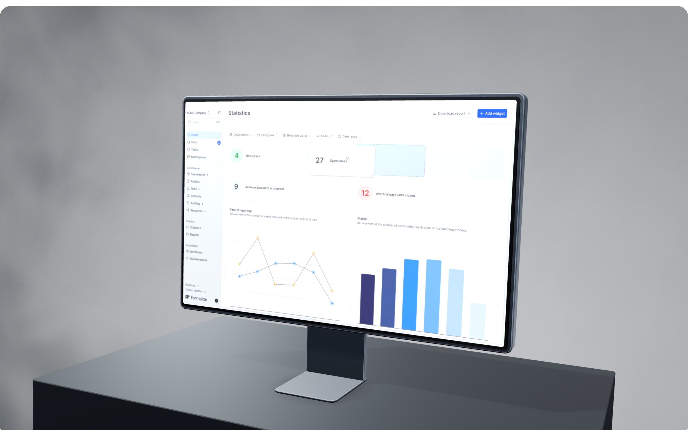

Case study
Formalize
Building the design function from zero at a hyper-growth compliance startup, in a domain where trust is everything.

The starting point
Europe is drowning in regulation. Formalize is building the platform to keep companies compliant.
Two products with real traction — built fast, and built by engineers. No PMs, no triads, and a previous design-system effort that had already failed once.
The challenge
Product-market fit without design fit — in a domain where trust is everything.
No full-time designers. One or two part-time freelancers pulled in occasionally for complex tasks, and customers telling us features worked differently from screen to screen.
The transformation
From on-demand help to design built into how Formalize solves problems and ships features.
Design in the room where direction gets set — hands-on, research-led, and close to engineering, rather than called in once the decisions were already made.
The playbook
A system that survived its second attempt
The first design-system effort had already failed. The second had to stick, so it shipped as something teams wanted to use rather than something they were told to adopt.
Triads, not handovers
An engineering lead, a PM and a designer in every team — so direction was set together instead of arriving as a spec.
A vision the team could point at
Defined where the platform was going — modern, fast, easy to grasp — and aligned the team behind it.
The result
0 → 4
Full-time designers, embedded in product teams
2
Products elevated — Formalize and Whistleblower Software
#1
Whistleblower Software, rated on G2
€30M
Series B funding I helped pitch and win
A rare breed of design leader who doesn't just manage pixels — he scales product vision.
Emil
Formalize
Next All work